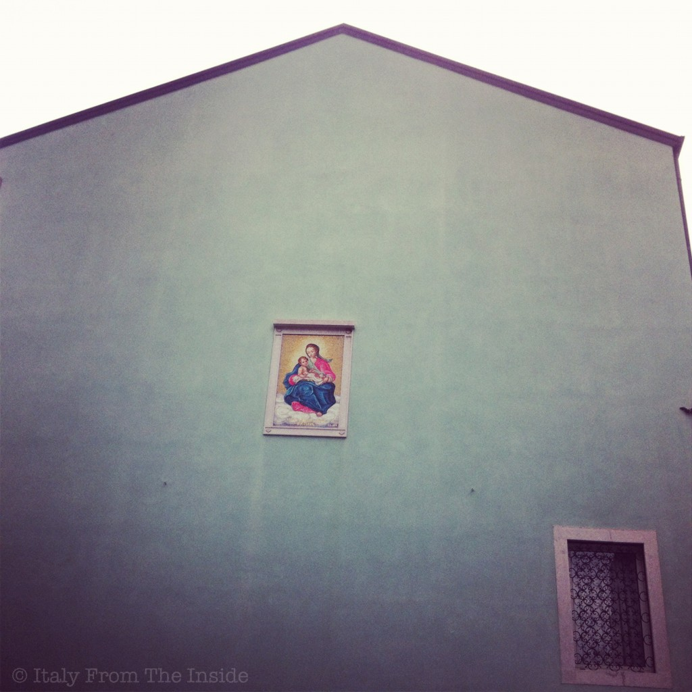

For some reason, I just love this building and the fact that there's absolutely nothing on it except for a beautiful wrought iron window and, right in the middle, the image of the Madonna con bambino. If the intention was to create an interesting and sacred focal point I think they nailed it. Don't you think?